Chapter 6 is about Diagnosis. Diagnosis, in one sense, is to see if the assumptions of the model match the empirical characteristics of the data. For example, the t-test of linear regression model builds on the normality assumption of the errors. If this assumption is not met by the data, the result of the t-test is concerned. Departure from assumptions doesn’t always mean that the model is not useful138 “All models are wrong, some are useful.”— George Box.. The gap between the theoretical assumptions of the model and the empirical data characteristics, together with the model itself, should be taken as a whole when we evaluate the strength of the conclusion. This wholesome idea is what diagnosis is about. It also helps us to identify opportunities to improve the model. Models are representations/approximations of reality, so we have to be critical about them, yet being critical is different from being dismissive139 A model that doesn’t fit the data also generates knowledge—revealed not by the failed model but by the fact that this model actually misfits. See Jaynes, E.T., Probability Theory: the Logic of Science. Cambridge Press, 2003.. There are many diagnostic tools that we can use to strengthen our critical evaluation.
Many diagnostic tools focus on the residual analysis. Residuals provide a numerical evaluation of the difference between the model and the data. Recall that \(y\) denotes the observed value of the outcome variable, \(f(\boldsymbol{x})\) denotes the model, and \(\hat{y}\) denotes the prediction (i.e., \(\hat{y} = f(\boldsymbol{x})\) is the prediction made by the model on the data point \(\boldsymbol{x}\)). The residual, denoted as \(\hat{\epsilon}\), is defined as \(\hat{\epsilon} = \hat{y} - y\). For any model that is trained on \(N\) data points, we could obtain \(N\) residuals, and draw the residuals as shown in Figure 100:
Figure 100: Suppose that three models are built on a dataset, and their residual plots are drawn: (left) decision tree; (middle) RF; (right) linear regression
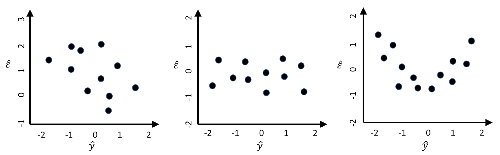1. Figure 100 (left). There is a linear relationship between \(\hat{\epsilon}\) and \(\hat{y}\), which suggests an absurd fact: \(\hat{y}\) could be used as a predictor to predict the \(\hat{\epsilon}\), the error. For instance, when \(\hat{y} = -1\), the error is between \(1\) and \(2\). If we adjust the prediction to be \(\hat{y} + 1\), wouldn’t that make the error to be between \(0\) and \(1\)? A reduced error means a better prediction model.
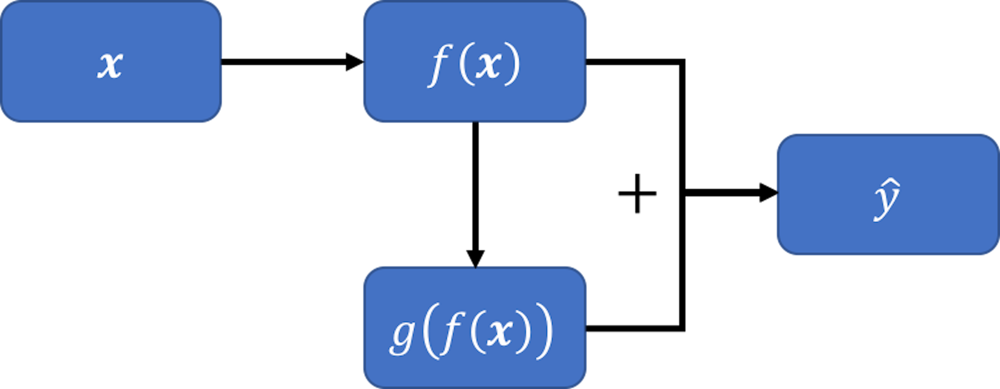 Figure 101: A new model, inspired by the pattern seen in Figure 100 (left)
To generalize this, let’s build another model \(g[f(\boldsymbol{x})]\) that takes \(f(\boldsymbol{x})\) as the predictor to predict \(\hat{\epsilon}\). Then, we can combine the two models, \(f(\boldsymbol{x})\) and \(g[f(\boldsymbol{x})]\), and obtain an improved prediction \(\hat{y}\) as \(f(\boldsymbol{x}) + g[f(\boldsymbol{x})]\). This is shown in Figure 101.
2. Figure 100 (middle). No correlation between \(\hat{\epsilon}\) and \(\hat{y}\) is observed. In other words, knowing \(\hat{y}\) offers no help to predict \(\hat{\epsilon}\). This is what a good model would behave like.
3. Figure 100 (right). There is a piece-wise linear relationship between \(\hat{\epsilon}\) and \(\hat{y}\). If we segment the figure by a vertical line at zero, we could apply the same argument made in Figure 100 (left) for each piece here: the model could be further improved following the same strategy outlined in Figure 101.
As each data point contributes a residual, the residual analysis offers us opportunities to examine some collective phenomena to improve the overall quality of the model. It also helps us check local patterns where we may find areas of improvement of the model or particularities of the data that the model could not synthesize. The beauty of checking out the residuals is that there is always something that is beyond our experience and expectation.
The R package ggfortify provides a nice bundle that includes the residual analysis, cook’s distance, leverage, and Q-Q plot.
Let’s use the final regression model we identified in Chapter 2 for an example.
library(RCurl)
url <- paste0("https://raw.githubusercontent.com",
"/analyticsbook/book/main/data/AD.csv")
AD <- read.csv(text=getURL(url))
AD$ID = c(1:dim(AD)[1])
str(AD)
# fit a full-scale model
AD_full <- AD[,c(2:17)]
lm.AD <- lm(MMSCORE ~ ., data = AD_full)
summary(lm.AD)
# Automatic model selection
lm.AD.F <- step(lm.AD, direction="backward", test="F")Details of the model are shown below.
## MMSCORE ~ PTEDUCAT + FDG + AV45 + HippoNV + rs744373 + rs610932
## + rs3764650 + rs3865444
##
## Df Sum of Sq RSS AIC F value Pr(>F)
## <none> 1537.5 581.47
## - rs3764650 1 7.513 1545.0 581.99 2.4824 0.115750
## - rs744373 1 12.119 1549.6 583.53 4.0040 0.045924 *
## - rs610932 1 14.052 1551.6 584.17 4.6429 0.031652 *
## - rs3865444 1 21.371 1558.9 586.61 7.0612 0.008125 **
## - AV45 1 50.118 1587.6 596.05 16.5591 5.467e-05 ***
## - PTEDUCAT 1 82.478 1620.0 606.49 27.2507 2.610e-07 ***
## - HippoNV 1 118.599 1656.1 617.89 39.1854 8.206e-10 ***
## - FDG 1 143.852 1681.4 625.71 47.5288 1.614e-11 ***
## ---
## Signif. codes: 0 '***' 0.001 '**' 0.01 '*' 0.05 '.' 0.1 ' ' 1We use the ggfortify to produce \(6\) diagnostic figures as shown in Figure 102.
# Conduct diagnostics of the model
# install.packages("ggfortify")
library("ggfortify")
autoplot(lm.AD.F, which = 1:6, ncol = 3, label.size = 3)Figure 102: Diagnostic figures of regression model on the AD dataset
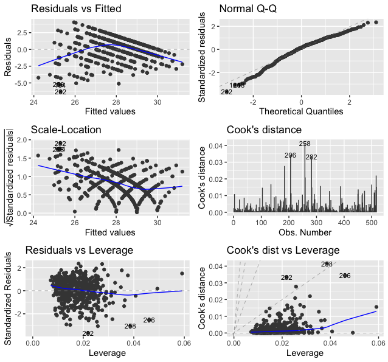The following is what we observe from Figure 102.
1. Figure 102 (upper left). This is the scatterplot of the residuals versus fitted values of the outcome variable. As we have discussed in Figure 100, this scatterplot is supposed to show purely random distributions of the dots. Here, we notice two abnormalities: (1) there is a relationship between the residuals and fitted values; and (2) there are unusual parallel lines140 This is often observed if the outcome variable takes integer values.. These abnormalities have a few implications: (1) the linear model underfits the data, so a nonlinear model is needed; (2) we have assumed that the data points are independent with each other, now this assumption needs to be checked; and (3) we have assumed homoscedasticity141 In Chapter 2, we assume that \(\epsilon \sim N\left(0, \sigma_{\varepsilon}^{2}\right)\). It assumes the errors have the same variance, \(\sigma_{\varepsilon}^{2}\), for all data points. of the variance of the errors. This is another assumption that needs to be checked142 To build nonlinear regression model or conditional variance regression model, see Chapter 9..
2. Figure 102 (upper right). The Q-Q plot checks the normality assumption of the errors. The \(45^{\circ}\) line is a fixed baseline, while the dots correspond to the data points. If the normality assumption is met, the dots should align with the line. Here, we see mild departure of the data from the normality assumption. And some particular data points such as the data points \(282\) and \(256\) are labelled since they are outstanding143 Are those points outliers? The Q-Q plot provides no conclusive evidence. It only suggests..
3. Figure 102 (middle left). This is a transformation of Figure 102 (upper left). Diagnostic tools are usually opportunistic approaches, i.e., what you see is what you get; if nothing particular is observed, it doesn’t mean there is no anomaly in the data. Changing perspectives is a common practice in model diagnosis.
4. Figure 102 (middle right). The Cook’s distance identifies influential data points that have larger than average influence on the parameter estimation of the model. For a data point \(\boldsymbol{x}_i\), its Cook’s distance \(D_{i}\) is defined as the sum of all the changes in the regression model when \(\boldsymbol{x}_i\) is removed from the training data. There is a closed-form formula144 Cook, R.D., Influential Observations in Linear Regression, Journal of the American Statistical Association, Volume 74, Number 365, Pages 169-174, 1979. to compute \({D_{i}, \text{ for } j=1,2,\dots,p}\), based on the least squares estimator of the regression parameters.
5. Figure 102 (lower left). The leverage of a data point, on the other hand, shows the influence of the data point in another way. The leverage of a data point is defined as \(\frac{\partial \hat{y}_{i}}{\partial y_{i}}\). This reflects how sensitively the prediction \(\hat{y}_{i}\) is influenced by \(y_{i}\). What data point will have a larger leverage value? For those surrounded by many closeby data points, their leverages won’t be large: the impact of a data point’s removal in a dense neighborhood is limited, given many other similar data points nearby. It is the data points in sparsely occupied neighborhoods that have large leverages. These data points could either be outliers that severely deviate from the linear trend represented by the majority of the data points, or could be valuable data points that align with the linear trend but lack neighbor data points. Thus, a data point that is influential doesn’t necessarily imply it is an outlier, as shown in Figure 103. When a data point has a larger leverage value, in-depth examination of the data point is needed to determine which case it is.
6. Figure 102 (lower right). This is another form of showing the information that is presented in Figure 102 (middle right) and (lower left).
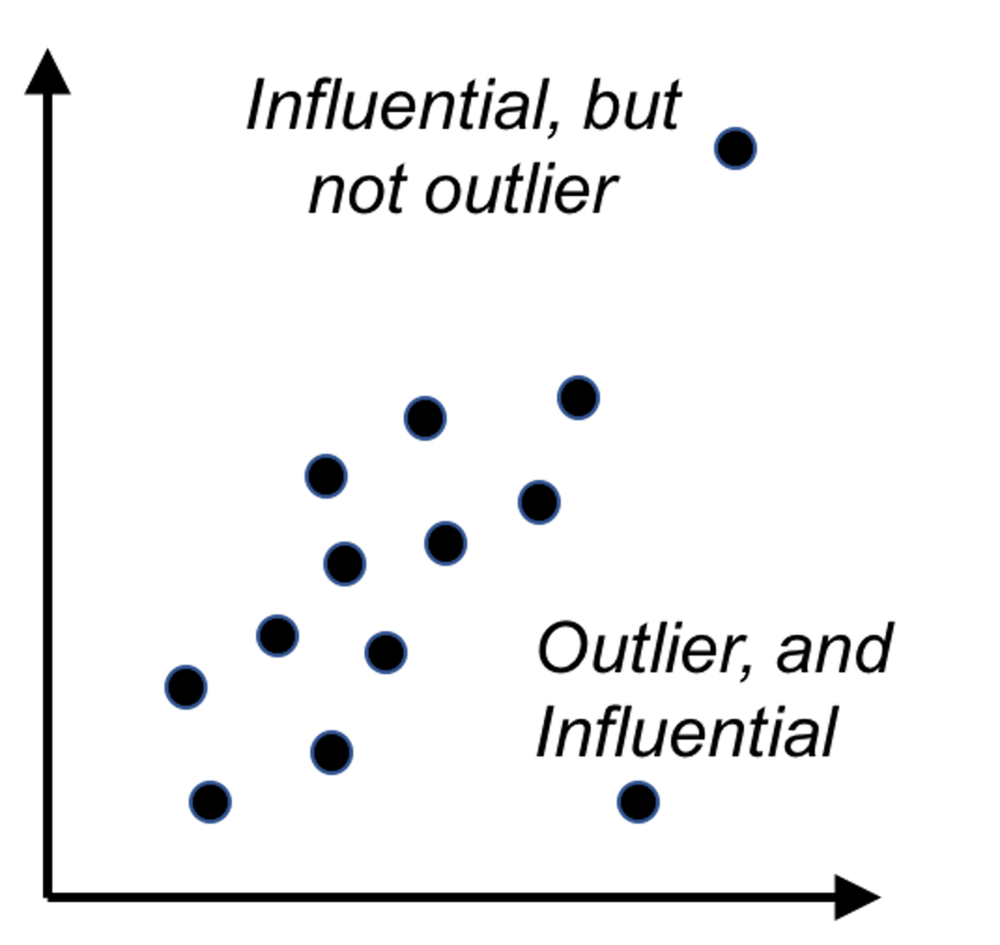 Figure 103: Outliers v.s. influential data points
A Simulation Experiment. We simulate a dataset while all the assumptions of the linear regression model are met. The model is
\[\begin{equation*} \small y=\beta_{0}+\beta_{1} x_{1}+\beta_{2} x_{2}+\varepsilon, \varepsilon \sim N(0,1). \end{equation*}\]
We simulate \(100\) samples from this model.
# For comparison, let's simulate data
# from a model that fits the assumptions
x1 <- rnorm(100, 0, 1)
x2 <- rnorm(100, 0, 1)
beta1 <- 1
beta2 <- 1
mu <- beta1 * x1 + beta2 * x2
y <- rnorm(100, mu, 1)We fit the data using linear regression model.
lm.XY <- lm(y ~ ., data = data.frame(y,x1,x2))
summary(lm.XY)The fitted model fairly reflects the underlying model.
##
## Call:
## lm(formula = y ~ ., data = data.frame(y, x1, x2))
##
## Residuals:
## Min 1Q Median 3Q Max
## -2.6475 -0.6630 -0.1171 0.7986 2.5074
##
## Coefficients:
## Estimate Std. Error t value Pr(>|t|)
## (Intercept) 0.0366 0.1089 0.336 0.738
## x1 0.9923 0.1124 8.825 4.60e-14 ***
## x2 0.9284 0.1159 8.011 2.55e-12 ***
## ---
## Signif. codes: 0 '***' 0.001 '**' 0.01 '*' 0.05 '.' 0.1 ' ' 1
##
## Residual standard error: 1.088 on 97 degrees of freedom
## Multiple R-squared: 0.6225, Adjusted R-squared: 0.6147
## F-statistic: 79.98 on 2 and 97 DF, p-value: < 2.2e-16autoplot(lm.XY, which = 1:6, ncol = 2, label.size = 3)Figure 104: Diagnostic figures of regression model on a simulation dataset
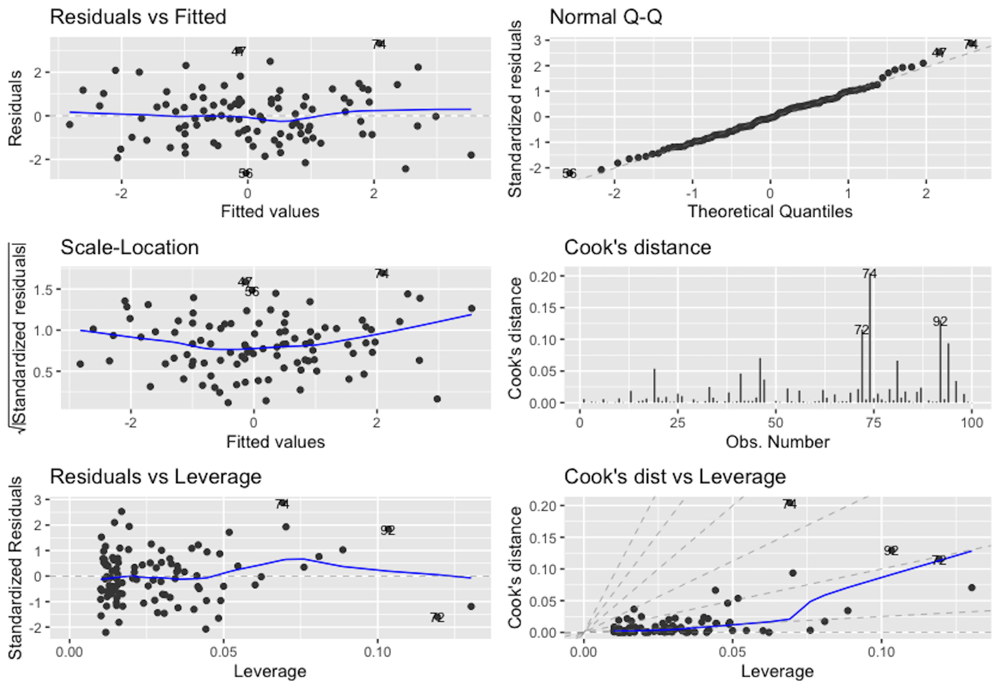Then, we generate the diagnostic figures as shown in Figure 104. Now Figure 104 provides a contrast of Figure 102. For example, in Figure 104 (upper left), we don’t see a nonrandom statistical pattern. The relationship between the residual and fitted values seems to be null. From the QQ-plot, we see that the normality assumption is held well. On the other hand, from the Cook’s distance and the leverage, some data points are observed to be outstanding, which are labeled. As we simulated the data following the assumptions of the linear regression model, this experiment shows that it is normal to expect a few data points to show outstanding Cook’s distance and leverage values.
# Conduct diagnostics of the model
library("ggfortify")
autoplot(lm.XY, which = 1:6, ncol = 3, label.size = 3)Multicollinearity refers to the phenomenon that there is a high correlation among the predictor variables. This causes a serious problem for linear regression models. We can do a simple analysis. Consider a linear system shown below
\[\begin{equation*} \small \begin{array}{c}{y=\beta_{0}+\beta_{1} x_{1}+\beta_{2} x_{2}+\cdots+\beta_{p} x_{p}+\varepsilon_y}, \\ {\varepsilon_y \sim N\left(0, \sigma_{\varepsilon_y}^{2}\right)}. \end{array} \end{equation*}\]
This looks like a regular linear regression model. However, here we further have
\[\begin{equation*} \small \begin{array}{c}{x_{1}=2 x_{2}+\epsilon_x}, \\ {\epsilon_x \sim N\left(0, \sigma_{\varepsilon_x}^{2}\right).}\end{array} \end{equation*}\]
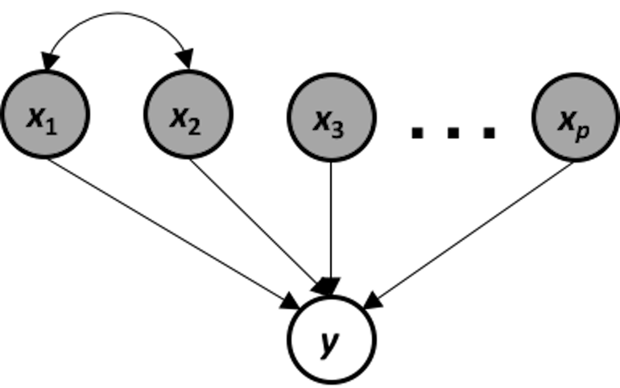 Figure 105: The data-generating mechanism of a system that suffers from multicollinearity
This data-generating mechanism is shown in Figure 105. It is a system that suffers from multicollinearity, i.e., if we apply a linear regression model on this system, the following models are both true models
\[\begin{equation*} \small \begin{array}{c}{y=\beta_{0}+\left(2 \beta_{1}+\beta_{2}\right) x_{2}+\beta_{3} x_{3} \ldots+\beta_{p} x_{p}} \\ {y=\beta_{0}+\left(\beta_{1}+0.5 \beta_{2}\right) x_{1}+\beta_{3} x_{3}+\cdots+\beta_{p} x_{p}}\end{array}. \end{equation*}\]
The problem of multicollinearity results from an inherent ambiguity of the models that could be taken as faithful representation of the data-generating mechanism. If the true model is ambiguous, it is expected that an estimated model suffers from this problem as well.
There are some methods that we can use to diagnose multicollinearity. For instance, we may visualize the correlations among the predictor variables using the R package corrplot.
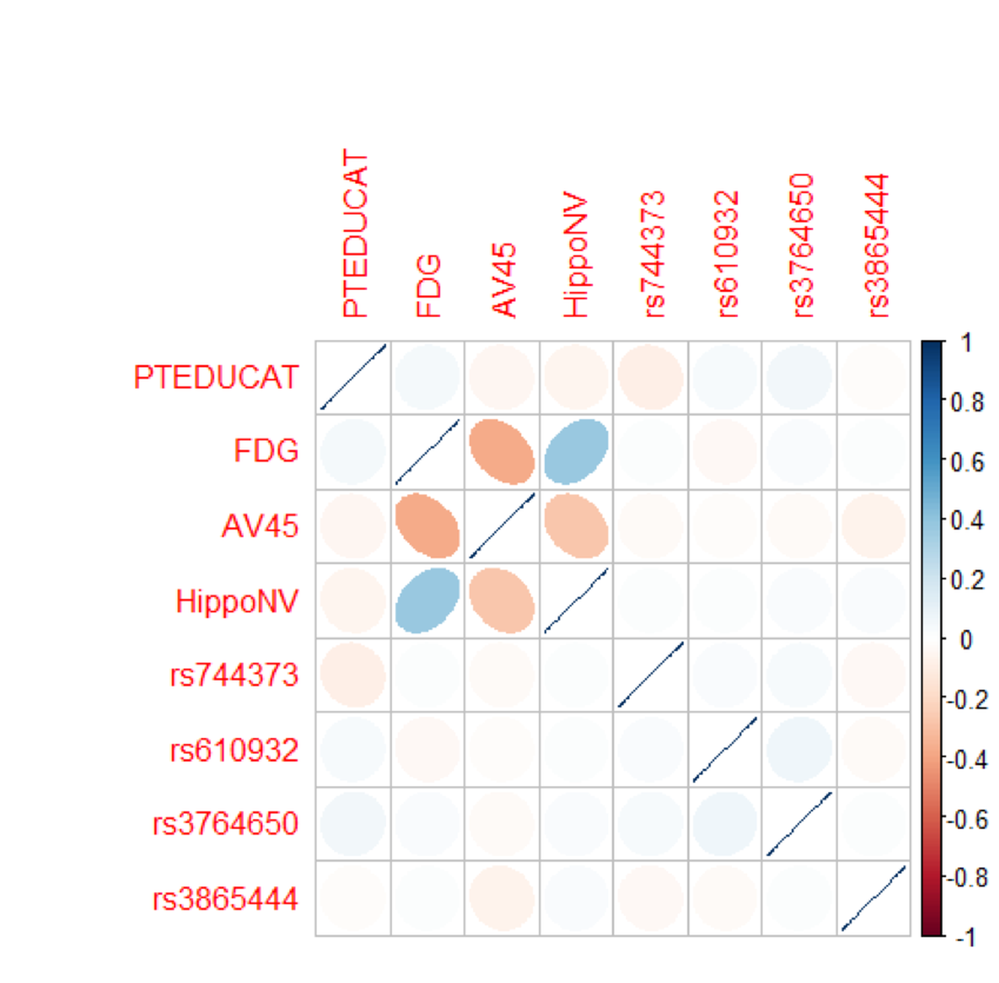
Figure 106: Correlations of the predictors in the regression model of MMSCORE
# Extract the covariance matrix of the regression parameters
Sigma = vcov(lm.AD.F)
# Visualize the correlation matrix of the estimated regression
# parameters
# install.packages("corrplot")
library(corrplot)
corrplot(cov2cor(Sigma), method="ellipse")Figure 106 shows that there are significant correlations between the variables, FDG, AV45, and HippoNV, indicating a concern for multicollinearity. On the other hand, it seems that the correlations are moderate, and not all the variables are strongly correlated with each other.
It is of interest to see why the strong correlations among predictor variables cause problems in the least squares estimator of the regression coefficients. Recall that \(\widehat{\boldsymbol{\beta}}=\left(\boldsymbol{X}^{T} \boldsymbol{X}\right)^{-1} \boldsymbol{X}^{T} \boldsymbol{y}\). If there are strong correlations among predictor variables, the matrix \(\boldsymbol{X}^{T} \boldsymbol{X}\) is ill-conditioned, i.e., small changes on \(\boldsymbol{X}\) result in large and unpredictable changes on the inverse matrix \(\boldsymbol{X}^{T} \boldsymbol{X}\), which further causes instability of the parameter estimation in \(\widehat{\boldsymbol{\beta}}\).145 To overcome multicollinearity in linear regression, the Principal Component Analysis discussed in Chapter 8 is useful.
We can use the plotmo package to perform residual analysis for a random forest model. For instance, we build a random forest model to predict the variable AGE in the AD dataset. We plot the residual versus the fitted values as shown in Figure 107 which shows there is a linear pattern between the fitted values and residuals. This indicates that this random forest model missed some linear relationship in the AD dataset.
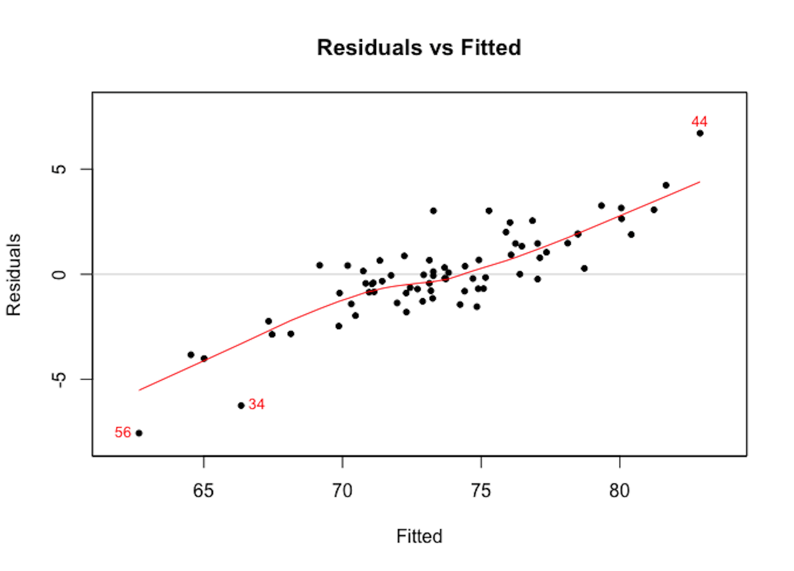 Figure 107: Residuals versus fitted in the random forest model
require(randomForest)
require(plotmo)
library(RCurl)
set.seed(1)
url <- paste0("https://raw.githubusercontent.com",
"/analyticsbook/book/main/data/AD_hd.csv")
data <- read.csv(text=getURL(url))
target <- data$AGE
rm_indx <- which(colnames(data) %in%
c("AGE", "ID", "TOTAL13", "MMSCORE","DX_bl"))
X <- data[, -rm_indx]
rf.mod <- randomForest(X, target)
plotres(rf.mod, which = 3)The random forest model doesn’t assume normality of its residuals. To make a comparison with the linear regression model, we draw the Q-Q plot of the random forest model in Figure 108. It can be seen that the residuals deviate from the straight line.
plotres(rf.mod, which = 4)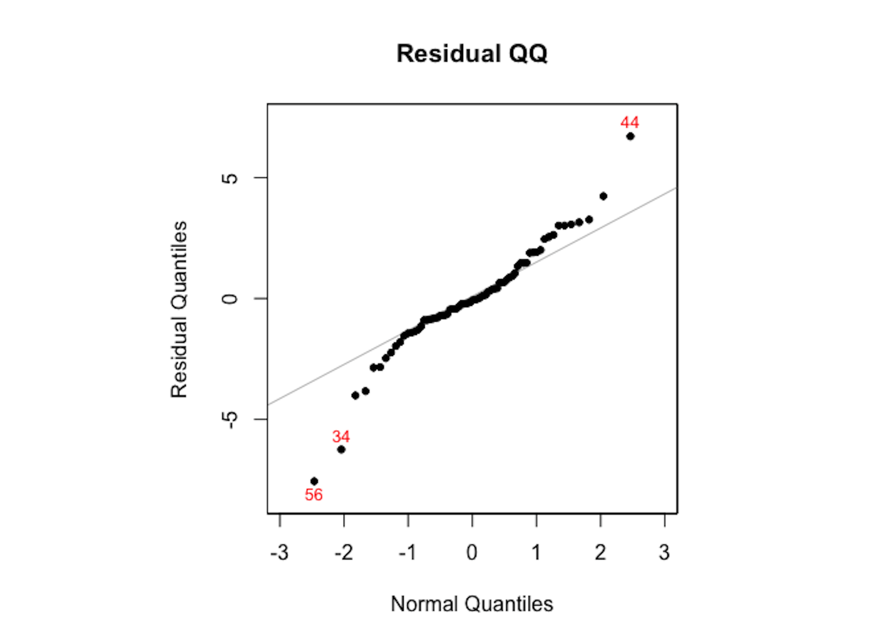 Figure 108: The Q-Q plot of residuals of the random forest model
As the random forest model is an algorithmic modeling approach that imposes no analytic assumption, diagnosis could still be done but interpretations are not as strong as in a linear regression model. There is still value to do so, to find area of improvement of the model, e.g., as Figure 107 suggests the random forest model could be further improved to incorporate the linear pattern in the data.
Clustering takes the idea of diagnosis to a different level. If the residual analysis is like a tailor working out the perfect outfit for a client, clustering is … well, it is better to see Figure 109 first.
Figure 109: A tailor tries to (left) make an outfit (i.e., the normal curve) for a client (i.e., the data, represented as a histogram) vs. (right) then the tailor realizes the form of the outfit should be two normal curves
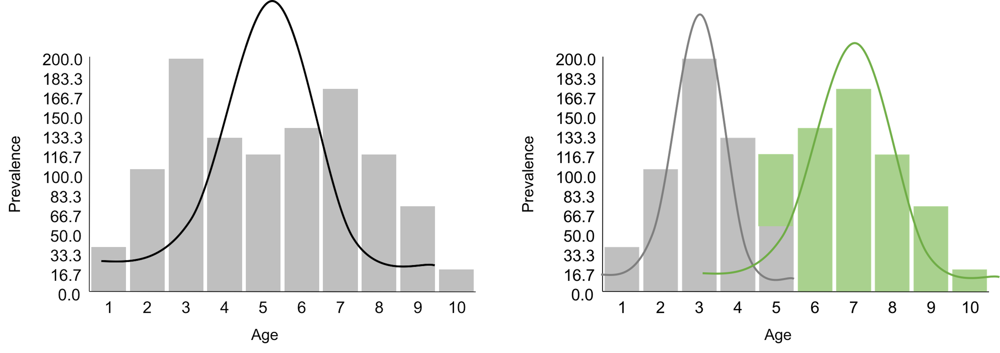Figure 109 demonstrates one meaning of clustering: a dataset is heterogeneous and is probably collected from a few different populations (sometimes we call them subpopulations). Understanding the clustering structure of a dataset not only benefits the statistical modeling, as shown in Figure 109 where we will use two normal distributions to model the data, but also reveals insights about the problem under study. For example, the dataset shown in Figure 109 was collected from a disease study of young children. It suggests that there are two disease mechanisms (we often call them two phenotypes). Phenotypes discovery is important for disease treatment, since patients with different disease mechanisms respond to treatments differently. A typical approach for phenotypes discovery is to collect an abundance of data from many patients. Then, we employ a range of algorithms to discover clusters of the data points. These clustering algorithms, differ from each other in their premises of what a cluster looks like, more or less bear the same conceptual framework as shown in Figure 109.
Figure 110: Another example of clustering: if the clustering structure is ignored, the fitted model (left) may show the opposite direction of the true model (right)
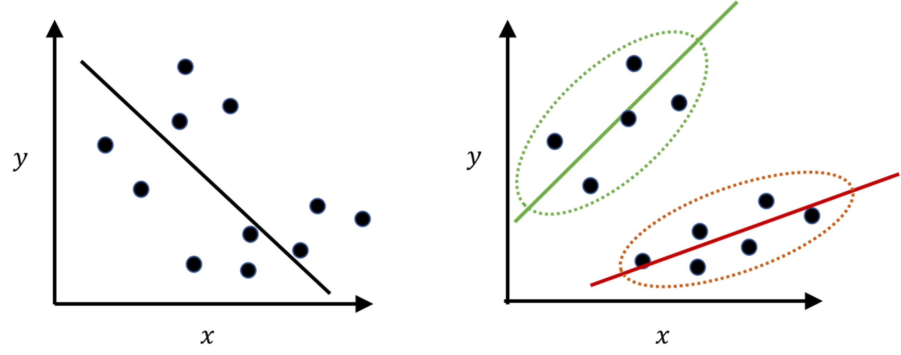Clustering is a flexible concept that could be applied in other scenarios as well. Figure 110 demonstrates another meaning of clustering. It is less commonly perceived, but in practice it is not uncommon. The “moral of the story” shown in Figure 110 tells us that, when you have a dataset, you may want to conduct EDA and check the clustering structure first before imposing a model that may only fit the data format but not the statistical structure146 E.g., in Figure 110: data format: we have predictors and outcome, so it seems natural to fit a linear regression model; statistical structure: however, it is a mix of two subpopulations that demand two models..
Given a dataset, how do we know there is a clustering structure? Consider the dataset shown in Table 25. Are there subpopulations as shown in Figure 109?
Table 25: Example of a dataset
| $ $ | \(x_1\) | \(x_2\) | \(x_3\) | \(x_4\) | \(x_5\) | \(x_6\) | \(x_7\) |
|---|---|---|---|---|---|---|---|
| Value | \(1.13\) | \(4.76\) | \(0.87\) | \(3.32\) | \(4.29\) | \(1.03\) | \(0.98\) |
| Cluster |
A visual check of the \(7\) data points suggests there are probably two clusters. If each cluster can be modeled as a Gaussian distribution, this would be a two-component Gaussian Mixture Model (GMM)147 A GMM consists of multiple Gaussian distributions. Figure 109 shows one example of two univariate Gaussian distributions mixed together. Generally, the parameters of a GMM are denoted as \(\boldsymbol{\Theta}\), which include the parameters of each Gaussian distribution: \(\mu_{i}\) and \(\sigma_{i}\) are the mean and variance of the \(i^{th}\) Gaussian distribution, respectively, and \(\pi_{i}\) is the proportion of the data points that were sampled from the \(i^{th}\) Gaussian distribution. .
In this particular dataset, clustering could be done by learning the parameters of the two-component (GMM), (i.e., to address the question marks in the last row of Table 25). If we have known the parameters \(\boldsymbol{\Theta}\), we could probabilistically infer which cluster each data point belongs to (i.e., to address the question marks in the second row of Table 25). On the other hand, if we have known which cluster each data point belongs to, we can collect the data points of each cluster to estimate the parameters of the Gaussian distribution that characterizes each cluster. This “locked” relation between the two tasks is shown in Figure 111.
Figure 111: The locked relation between parameter estimation (M-step, i.e., last row of Table 25) and data point inference (E-step, i.e., second row of Table 25) in GMM
The two interdependent tasks hold the key for each other. What is needed is initialization. As there are two blocks in Figure 111, we have two locations to initialize the process of unlocking.
Initialization. Let’s initialize the values in the second row of Table 25 for an example. We assign (i.e., randomly) labels on the data points as shown in Table 26.
Table 26: Initialization on the dataset example
| \(x_i\) | \(x_1\) | \(x_2\) | \(x_3\) | \(x_4\) | \(x_5\) | \(x_6\) | \(x_7\) |
|---|---|---|---|---|---|---|---|
| ID | \(1.13\) | \(4.76\) | \(0.87\) | \(3.32\) | \(4.29\) | \(1.03\) | \(0.98\) |
| Label | \(C1\) | \(C1\) | \(C1\) | \(C2\) | \(C2\) | \(C1\) | \(C1\) |
M-step. Then, we estimate \(\mu_{1}=1.75\) and \(\sigma_{1}^{2}=2.83\) based on the data points \(\{1.13, 4.76, 0.87, 1.03, 0.98\}\).148 These \(5\) data instances are initially assigned to \(C1\). Note that \(4.76\) is different from the rest of the data points in the same cluster. This is an error introduced by the initialization. Later we will see that this error could be automatically fixed by the algorithm.
Similarly, we could estimate \(\mu_{2}=3.81\) and \(\sigma_{2}^{2}=0.47\) based on the data points \(\{3.32, 4.29\}\).
It is straightforward to estimate \(\pi_{1}=5/7 = 0.714\) and \(\pi_{2}=2/7 = 0.286\).
Table 26 is updated.
Table 27: \(\boldsymbol{\Theta}\) updated
| \(x_i\) | \(x_1\) | \(x_2\) | \(x_3\) | \(x_4\) | \(x_5\) | \(x_6\) | \(x_7\) |
|---|---|---|---|---|---|---|---|
| ID | \(1.13\) | \(4.76\) | \(0.87\) | \(3.32\) | \(4.29\) | \(1.03\) | \(0.98\) |
| Label | \(C1\) | \(C1\) | \(C1\) | \(C2\) | \(C2\) | \(C1\) | \(C1\) |
E-step. Since the labels of the data points were randomly initialized, they need to be updated given the latest estimation of \(\boldsymbol{\Theta}\). We continue to update the labels of the data points. To facilitate the presentation, we invent a binary indicator variable, denoted as \(z_{n m}\): \(z_{n m}=1\) indicates that the data point \(x_{n}\) was assumed to be sampled from the \(m^{th}\) cluster; otherwise, \(z_{n m}=0\).
For example, if the first data point was sampled from the first cluster, the probability that \(x_1 = 1.13\) is149 In R, we could use the function dnorm to calculate it. For example, for \(p\left(x_{1} = 1.13| z_{11}=1 \right)\), we use dnorm(1.13, mean = 1.75, sd = sqrt(2.83)) since \(\mu_{1}=1.75, \sigma_{1}^{2}=2.83\).
\[\begin{equation*} \small p\left(x_{1} = 1.13| z_{11}=1 \right)=0.22. \end{equation*}\]
And if the first data point was sampled from the second cluster, the probability that \(x_1 = 1.13\) is
\[\begin{equation*} \small p\left(x_{1} = 1.13 | z_{12}=1 \right)=0.0003. \end{equation*}\]
Repeat it for all the other data points, we have:
\[\begin{equation*} \small p\left(x_{2}=4.76 | z_{21}=1 \right)=0.05, p\left(x_{2}=4.76 | z_{22}=1 \right)=0.22; \end{equation*}\]
\[\begin{equation*} \small p\left(x_{3}=0.87 | z_{31}=1 \right)=0.02, p\left(x_{3}=0.87 | z_{32}=1 \right)=0; \end{equation*}\]
\[\begin{equation*} \small p\left(x_{4}=3.32 | z_{41}=1 \right)=0.15, p\left(x_{4}=3.32 | z_{42}=1 \right)=0.45; \end{equation*}\]
\[\begin{equation*} \small p\left(x_{5}=4.29 | z_{51}=1 \right)=0.08, p\left(x_{5}=4.29 | z_{52}=1 \right)=0.45; \end{equation*}\]
\[\begin{equation*} \small p\left(x_{6}=1.03 | z_{61}=1 \right)=0.22, p\left(x_{6}=1.03 | z_{62}=1 \right)=0.0001; \end{equation*}\]
\[\begin{equation*} \small p\left(x_{7}=0.98 | z_{71}=1 \right)=0.21, p\left(x_{7}=0.98 | z_{72}=1 \right)=0.0001. \end{equation*}\]
Note that we need to calculate “the probability of which cluster a data point was sampled from”150 I.e., \(p\left(z_{11}=1 | x_1 = 1.13\right)\).. This is different from the probabilities we have calculated as shown above, which concerns“if a data point was sampled from a cluster, then the probability of the specific value the data point took on”151 I.e., \(p\left(x_{1} = 1.13| z_{11}=1 \right)\)..
Thus, we further calculate the conditional probabilities of \(p\left(z_{i1} | x_i\right)\)
\[\begin{equation*} \small p\left(z_{11}=1 | x_1 = 1.13 \right)=\frac{0.22 \times 0.714}{0.22 \times 0.714+0.0003 \times 0.286}=0.99; \text{ thus } x_1 \in C_1. \end{equation*}\]
\[\begin{equation*} \small p\left(z_{21}=1 | x_2 = 4.76 \right)=\frac{0.05 \times 0.714}{0.05 \times 0.714+0.22 \times 0.286}=0.37; \text{ thus } x_2 \in C_2. \end{equation*}\]
\[\begin{equation*} \small p\left(z_{31}=1 | x_3 = 0.87 \right)=\frac{0.02 \times 0.714}{0.02 \times 0.714+0.00 \times 0.286}=1; \text{ thus } x_3 \in C_1. \end{equation*}\]
\[\begin{equation*} \small p\left(z_{41}=1 | x_4 = 3.32 \right)=\frac{0.15 \times 0.714}{0.15 \times 0.714+0.45 \times 0.286}=0.44; \text{ thus } x_4 \in C_2. \end{equation*}\]
\[\begin{equation*} \small p\left(z_{51}=1 | x_5 = 4.29 \right)=\frac{0.08 \times 0.714}{0.08 \times 0.714+0.45 \times 0.286}=0.29; \text{ thus } x_5 \in C_2. \end{equation*}\]
\[\begin{equation*} \small p\left(z_{61}=1 | x_6 = 1.03 \right)=\frac{0.22 \times 0.714}{0.22 \times 0.714+0.0001 \times 0.286}=0.99; \text{ thus } x_6 \in C_1. \end{equation*}\]
\[\begin{equation*} \small p\left(z_{71}=1 | x_7 = 0.98 \right)=\frac{0.21 \times 0.714}{0.21 \times 0.714+0.0001 \times 0.286}=0.99; \text{ thus } x_7 \in C_1. \end{equation*}\]
Table 27 can be updated to Table 28.
We can repeat this process and cycle through the two steps as shown in Figure 111, until the process converges, i.e., \(\boldsymbol{\Theta}\) remains the same (or its change is very small), or the labels of the data points remain the same. In this example, we actually only need one more iteration to reach convergence. This algorithm is a basic version of the so-called EM algorithm. Interested readers could find a complete derivation process in the Remarks section.
Table 28: Cluster labels updated
| \(x_i\) | \(x_1\) | \(x_2\) | \(x_3\) | \(x_4\) | \(x_5\) | \(x_6\) | \(x_7\) |
|---|---|---|---|---|---|---|---|
| ID | \(1.13\) | \(4.76\) | \(0.87\) | \(3.32\) | \(4.29\) | \(1.03\) | \(0.98\) |
| Label | \(C1\) | \(C2\) | \(C1\) | \(C2\) | \(C2\) | \(C1\) | \(C1\) |
As a data modeling approach, the GMM implies a data-generating mechanism, that is summarized in below.
1. [1.] Suppose that there are \(M\) distributions mixed together.
2. [2.] In GMM, we assume that all the distributions are Gaussian distributions, i.e., the parameters of the \(m^{\text{th}}\) distribution are \(\left\{\boldsymbol{\mu}_{m},\boldsymbol{\Sigma}_{m}\right\}\), and \(m=1,2, \ldots, M\).152 \(\boldsymbol{\mu}_{m}\) is the mean vector; \(\boldsymbol{\Sigma}_{m}\) is the covariance matrix.
3. [3.] For any data point \(\boldsymbol{x}\), without knowing its specific value, the prior probability that it comes from the \(m^{\text{th}}\) distribution is denoted as \(\pi_m\).153 In other words, this is the percentage of the data points in the whole mix that come from the \(m^{th}\) distribution. Note that \(\sum_{m=1}^{M} \pi_m=1\).
The final distribution form of \(\boldsymbol{x}\) is a mixed distribution with \(m\) components
\[\begin{equation*} \small \boldsymbol{x} \sim \pi_{1} N\left(\boldsymbol{\mu}_{1}, \boldsymbol{\Sigma}_{1}\right) + \pi_{2} N\left(\boldsymbol{\mu}_{2}, \boldsymbol{\Sigma}_{2}\right) + {\ldots} + \pi_{m} N\left(\boldsymbol{\mu}_{m}, \boldsymbol{\Sigma}_{m}\right). \end{equation*}\]
To learn the parameters from data, the EM algorithm is used. A basic walk-through of the EM algorithm has been given, i.e., see the example using Table 25.
We simulate a dataset with \(4\) clusters as shown in Figure 112.
# Simulate a clustering structure
X <- c(rnorm(200, 0, 1), rnorm(200, 10,2),
rnorm(200,20,1), rnorm(200,40, 2))
Y <- c(rnorm(800, 0, 1))
plot(X,Y, ylim = c(-5, 5), pch = 19, col = "gray25")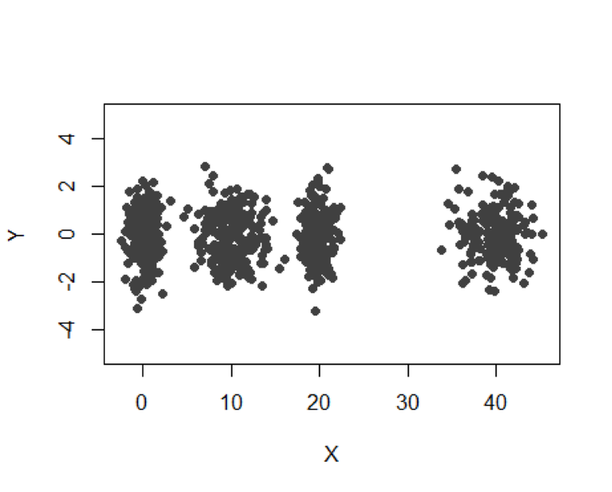 Figure 112: A mixture of \(4\) Gaussian distributions
We use the R package Mclust to implement the GMM model using the EM algorithm.
# use GMM to identify the clusters
require(mclust)
XY.clust <- Mclust(data.frame(X,Y))
summary(XY.clust)
plot(XY.clust)We obtain the following result. Visualization of the identified clusters is shown in Figure 113. Note that we didn’t specify the number of clusters in the analysis. Mclust used BIC and correctly identified the \(4\) clusters. For each cluster, the data points are about \(200\).
## ----------------------------------------------------
## Gaussian finite mixture model fitted by EM algorithm
## ----------------------------------------------------
##
## Mclust VVI (diagonal, varying volume and shape) model with
## 4 components:
##
## log.likelihood n df BIC ICL
## -3666.07 800 19 -7459.147 -7459.539
##
## Clustering table:
## 1 2 3 4
## 199 201 200 200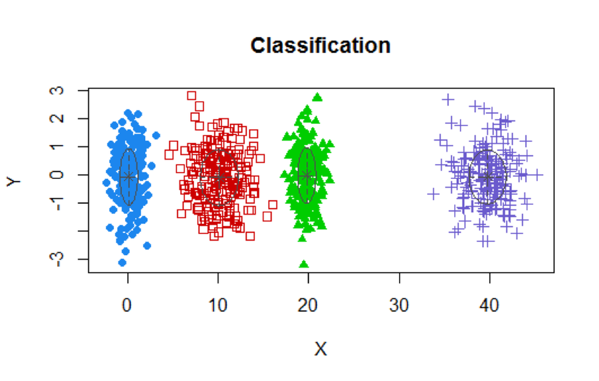 Figure 113: Clustering results of the simulated data
Now let’s implement GMM on the AD data. Result is shown in Figure 114.
# install.packages("mclust")
require(mclust)
AD.Mclust <- Mclust(AD[,c(3,4,5,6,10,12,14,15)])
summary(AD.Mclust)
AD.Mclust$data = AD.Mclust$data[,c(1:4)]
# plot(AD.Mclust)
## ----------------------------------------------------
## Gaussian finite mixture model fitted by EM algorithm
## ----------------------------------------------------
##
## Mclust EEI (diagonal, equal volume and shape) model
## with 4 components:
##
## log.likelihood n df BIC ICL
## -3235.874 517 43 -6740.414 -6899.077
##
## Clustering table:
## 1 2 3 4
## 43 253 92 129Figure 114: Clustering results of the AD dataset
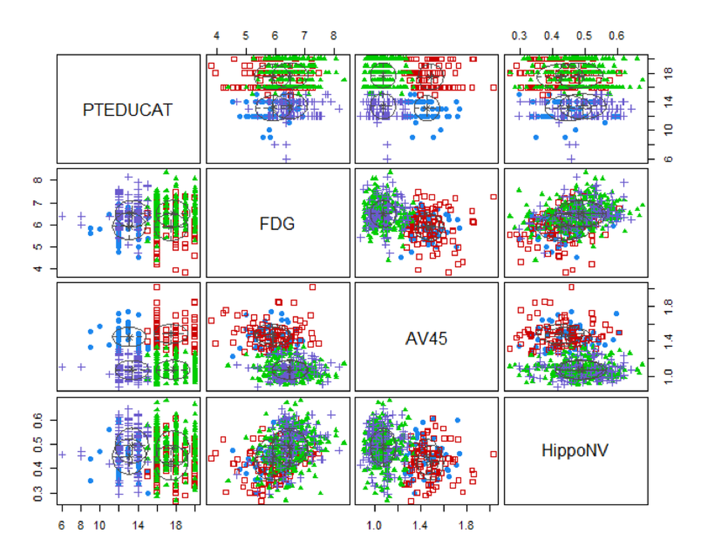Four clusters are identified as well. Figure 114 shows the boundaries between clusters are not as distinct as the boundaries in Figure 113. In real applications, particularly for those applications of which we haven’t known enough, clustering is an exploration tool that could generate suggestive results but may not provide confirmatory conclusions.
The aforementioned two-step iterative algorithm (i.e., as outlined in Figure 111) illustrates how the EM Algorithm works. We have assumed that the two-step iterative algorithm would converge. Luckily, it had been proved that the EM Algorithm generally would converge154 Wu, J., On the Convergence Properties of the EM Algorithm, The Annals of Statistics, Volume 11, Number 1, Pages 95-103, 1983..
The task of the EM algorithm is to learn the unknown parameters \(\boldsymbol{\Theta}\) from a given dataset. The \(\boldsymbol{\Theta}\) includes
1. [1.] The parameters of the \(M\) Gaussian distributions: \(\left\{\boldsymbol{\mu}_{m}, \boldsymbol{\Sigma}_{m}, m=1,2, \ldots, M\right\}\).
2. [2.] The probability vector \(\boldsymbol{\pi}\) that includes the elements \(\left\{\pi_{m}, m=1,2, \ldots, M\right\}\).
Don’t forget the binary indicator variable for each data point, denoted as \(z_{n m}\): \(z_{n m}=1\) indicates that the data point \(x_{n}\) was sampled from the \(m^{th}\) cluster155 The reason that \(z_{n m}\) is not included in \(\boldsymbol{\Theta}\), as it could be seen later, after the presentation of the EM algorithm, is that \(z_{n m}\) provides a bridge to facilitate the learning of \(\boldsymbol{\Theta}\). They are not essential parameters of the model, although they are useful to facilitate the estimation of the parameters of the model. Entities like \(z_{n m}\) are often called latent variables instead of parameters..
The Likelihood Function. To learn these parameters from data, like in the logistic regression model, we derive a likelihood function to connect the data and parameters. For GMM, we cannot write \(p\left(\boldsymbol{x}_{n} | \boldsymbol{\Theta}\right)\) directly. But it is possible to write \(p\left(\boldsymbol{x}_{n}, z_{n m} | \boldsymbol{\Theta}\right)\) directly156 That is what \(z_{n m}\) is needed for.
\[\begin{equation} \small p\left(\boldsymbol{x}_{n}, z_{n m} | \boldsymbol{\Theta}\right) = \prod_{m=1}^{M}\left[p\left(\boldsymbol{x}_{n} | z_{n m}=1, \boldsymbol{\Theta} \right) p\left(z_{n m}=1\right)\right]^{z_{n m}}. \tag{35} \end{equation}\]
We apply log on Eq. (35) and get the log-likelihood function in Eq (36)157 Note that, by definition, \(\pi_m = p\left(z_{n m}=1\right)\).
\[\begin{equation} \small \log p\left(\boldsymbol{x}_{n}, z_{n m} | \boldsymbol{\Theta}\right) = \sum_{m=1}^{M}\left[z_{n m} \log p\left(\boldsymbol{x}_{n} | z_{n m}=1, \boldsymbol{\Theta} \right)+z_{n m} \log \pi_{m}\right]. \tag{36} \end{equation}\]
It is known that158 I.e., by the definition of multivariate normal distribution; interested readers may see the Appendix of this book for a brief review. Here, the constant term \((2 \pi)^{-p / 2}\) in the density function of the multivariate normal distribution is ignored, so “\(\propto\)” is used instead of “\(=\).”
\[\begin{equation} \small p\left(\boldsymbol{x}_{n} | z_{n m}=1, \boldsymbol{\Theta} \right) \propto \left|\boldsymbol{\Sigma}_{m}\right|^{-1 / 2} \exp \left\{-\frac{1}{2}\left(\boldsymbol{x}_{n}-\boldsymbol{\mu}_{m}\right)^{T} \boldsymbol{\Sigma}_{m}^{-1}\left(\boldsymbol{x}_{n}-\boldsymbol{\mu}_{m}\right)\right\}. \tag{37} \end{equation}\]
Plug Eq. (37) into Eq. (36), we get
\[\begin{equation} \small \begin{gathered} \log p\left(\boldsymbol{x}_{n}, z_{n m} | \boldsymbol{\Theta}\right) \propto \\ \sum_{m=1}^{M}\left[z_{n m} \left( - \frac{1}{2}\log \left|\boldsymbol{\Sigma}_{m}\right| -\frac{1}{2}\left(\boldsymbol{x}_{n}-\boldsymbol{\mu}_{m}\right)^{T} \boldsymbol{\Sigma}_{m}^{-1}\left(\boldsymbol{x}_{n}-\boldsymbol{\mu}_{m}\right)+\right. z_{n m} \log \pi_{m} \right]. \end{gathered} \tag{38} \end{equation}\]
As there are \(N\) data points, the complete log-likelihood function is defined as
\[\begin{equation} \small l(\boldsymbol{\Theta}) = \log p(\boldsymbol{X}, \boldsymbol{Z} | \boldsymbol{\Theta}) = \log \prod_{n=1}^{N} p\left(\boldsymbol{x}_{n}, z_{n m} | \boldsymbol{\Theta}\right). \tag{39} \end{equation}\]
With Eq. (38), Eq. (39) can be rewritten as
\[\begin{equation} \small \begin{gathered} l(\boldsymbol{\Theta}) \propto \\ \sum_{n=1}^{N} \sum_{m=1}^{M}\left[z_{n m} \left( - \frac{1}{2}\log \left|\boldsymbol{\Sigma}_{m}\right| -\frac{1}{2}\left(\boldsymbol{x}_{n}-\boldsymbol{\mu}_{m}\right)^{T} \boldsymbol{\Sigma}_{m}^{-1}\left(\boldsymbol{x}_{n}-\boldsymbol{\mu}_{m}\right)+\right. z_{n m} \log \pi_{m} \right]. \end{gathered} \tag{40} \end{equation}\]
Now we have an explicit form of \(l(\boldsymbol{\Theta})\), based on which we use an optimization algorithm to search for the best estimate of \(\boldsymbol{\Theta}\).
Recall that \(z_{n m}\) is unknown. Here comes the initialization again. Following the idea we have implemented in the data example shown in Table 25, we propose the following strategy:
1. Initialization. Either initialize \(\left\{z_{nm}, n=1,2, \ldots, N; m=1,2, \ldots, M\right\}\) or \(\boldsymbol{\Theta}\).
2. E-step. We can estimate \(z_{n m}\) if we have known \(\boldsymbol{\Theta}\) (i.e., given \(\boldsymbol{\Theta}\)), the best estimate of \(z_{n m}\) is the expectation of \(z_{n m}\) where the expectation is taken regarding the distribution \(p\left(z_{n m} | \boldsymbol{x}_{n}, \boldsymbol{\Theta}\right)\) (i.e., denoted as \(\left\langle Z_{n m}\right\rangle_{p\left(z_{n m} | \boldsymbol{x}_{n}, \boldsymbol{\Theta}\right)}\)). By definition, we have
\[\begin{equation} \small \begin{gathered} \left\langle z_{n m}\right\rangle_{p\left(z_{n m} | \boldsymbol{x}_{n}, \boldsymbol{\Theta}\right)}=1\cdot p\left(z_{n m}=1 | \boldsymbol{x}_{n},{\boldsymbol{\Theta}}\right)+0 \cdot p\left(z_{n m}=0 | \boldsymbol{x}_{n}, {\boldsymbol{\Theta}}\right). \end{gathered} \tag{41} \end{equation}\]
It is known that
\[\begin{equation} \small p\left(z_{n m}=1 | \boldsymbol{x}_{n}, \boldsymbol{\Theta}\right)=\frac{p\left(\boldsymbol{x}_{n} | z_{n m}=1, \boldsymbol{\Theta}\right) \pi_{m}}{\sum_{k=1}^{M} p\left(\boldsymbol{x}_{n} | z_{n k}=1, \boldsymbol{\Theta}\right) \pi_{k}}. \tag{42} \end{equation}\]
Thus,
\[\begin{equation} \small \begin{gathered} \left\langle z_{n m}\right\rangle_{p\left(z_{n m} | \boldsymbol{x}_{n}, \boldsymbol{\Theta}\right)}= \frac{p\left(\boldsymbol{x}_{n} | z_{n m}=1, \boldsymbol{\Theta}\right) \pi_{m}}{\sum_{k=1}^{M} p\left(\boldsymbol{x}_{n} | z_{n k}=1, \boldsymbol{\Theta}\right) \pi_{k}}. \end{gathered} \tag{43} \end{equation}\]
3. M-step. Then, we derive the expectation of \(l(\boldsymbol{\Theta})\) regarding the distribution \(p\left(z_{n m} | \boldsymbol{x}_{n}, \boldsymbol{\Theta}\right)\)
\[\begin{equation} \small \begin{gathered} \langle l(\boldsymbol{\Theta})\rangle_{p(\boldsymbol{Z} | \boldsymbol{X}, \boldsymbol{\Theta})}=\sum_{n=1}^{N} \sum_{m=1}^{M}\left[\left\langle z_{n m}\right\rangle_{p\left(z_{n m} =1 | \boldsymbol{x}_{n}, \boldsymbol{\Theta}\right)} \log p\left(\boldsymbol{x}_{n} | z_{n m}=1, \boldsymbol{\Theta}\right)+\right. \\ \left\langle z_{n m}\right\rangle_{p\left(z_{n m} =1 | \boldsymbol{x}_{n}, \boldsymbol{\Theta}\right)} \log \pi_{m} ]. \end{gathered} \tag{44} \end{equation}\]
And we optimize Eq. (44) for \(\boldsymbol{\Theta}\).
4. Repeat the E-step and M-step. With the updated \(\boldsymbol{\Theta}\), we go back to the estimate of \(z_{n m}\) using Eq. (43), and then, feed the new estimate of \(z_{n m}\) into Eq. (44), and solve for \(\boldsymbol{\Theta}\) again. Repeat these iterations, until all the parameters in the iterations don’t change significantly159 Usually, we define a tolerance, e.g., the difference between two consecutive estimates of \(\boldsymbol{\Theta}\) is numerically bounded, such as \(10^{-4}\)..
More about the M-step. To estimate the parameters \(\boldsymbol{\Theta}\), in the M-step we use the First Derivative Test again and take derivatives of \(\langle l(\boldsymbol{\Theta})\rangle_{p(\boldsymbol{Z} | \boldsymbol{X}, \boldsymbol{\Theta})}\) (i.e., as shown in Eq. (44)) regarding \(\boldsymbol{\Theta}\) and put the derivatives equal to zero.
For \(\boldsymbol{\mu}_{m}\), we have
\[\begin{equation} \small \frac{\partial\langle l(\boldsymbol{\Theta})\rangle_{p(\boldsymbol{Z} | \boldsymbol{X}, \boldsymbol{\Theta})}}{\partial \boldsymbol{\mu}_{m}}=\sum_{n=1}^{N}\left\langle z_{n m}\right\rangle_{p\left(z_{n m} =1 | \boldsymbol{x}_{n}, \boldsymbol{\Theta}\right)} \frac{\partial \log p\left(\boldsymbol{x}_{n} | z_{n m}=1, \boldsymbol{\Theta}\right)}{\partial \boldsymbol{\mu}_{m}}=\boldsymbol{0}. \tag{45} \end{equation}\]
Based on Eq. (37), we can derive
\[\begin{equation} \small \frac{\partial \log p\left(\boldsymbol{x}_{n} | z_{n m}=1, \boldsymbol{\Theta}\right)}{\partial \boldsymbol{\mu}_{m}}= -\frac{1}{2} \frac{\partial\left(\boldsymbol{x}_{n}-\boldsymbol{\mu}_{m}\right)^{T} \boldsymbol{\Sigma}_{m}^{-1}\left(\boldsymbol{x}_{n}-\boldsymbol{\mu}_{m}\right)}{\partial \boldsymbol{\mu}_{m}}=\left(\boldsymbol{x}_{n}-\boldsymbol{\mu}_{m}\right)^{T} \boldsymbol{\Sigma}_{m}^{-1}. \tag{46} \end{equation}\]
Putting the result of Eq. (46) into Eq. (45), we can estimate \(\boldsymbol{\mu}_{m}\) by solving Eq. (45)
\[\begin{equation} \small \boldsymbol{\mu}_{m}=\frac{\sum_{n=1}^{N}\left\langle z_{n m}\right\rangle_{p\left(z_{n m} =1 | \boldsymbol{x}_{n}, \boldsymbol{\Theta}\right)} \boldsymbol{x}_{n}}{\sum_{n=1}^{N}\left\langle z_{n m}\right\rangle_{p\left(z_{n m} =1 | \boldsymbol{x}_{n}, \boldsymbol{\Theta}\right)}}. \tag{47} \end{equation}\]
Similarly, we take derivatives of \(\langle l({\boldsymbol{\Theta}})\rangle_{p(\boldsymbol{Z} | \boldsymbol{X}, \boldsymbol{\Theta})}\) regarding \(\boldsymbol{\Sigma}_{m}\) and put the derivatives equal to zero
\[\begin{equation} \small \frac{\partial\langle l(\boldsymbol{\Theta})\rangle_{p(\boldsymbol{Z} | \boldsymbol{X}, \boldsymbol{\Theta})}}{\partial \boldsymbol{\Sigma}_{m}}=\sum_{n=1}^{N}\left\langle z_{n m}\right\rangle_{p\left(z_{n m} =1 | \boldsymbol{x}_{n}, \boldsymbol{\Theta}\right)} \frac{\partial \log p\left(\boldsymbol{x}_{n} | z_{n m}=1, \boldsymbol{\Theta}\right)}{\partial \boldsymbol{\Sigma}_{m}}=\boldsymbol{O}. \tag{48} \end{equation}\]
Based on Eq. (37), we can derive
\[\begin{equation} \small \begin{gathered} \frac{\partial \log p\left(\boldsymbol{x}_{n} | z_{n m}=1, \boldsymbol{\Theta}\right)}{\partial \boldsymbol{\Sigma}_{m}} = \\ \frac{1}{2} \frac{\partial\left\{\left|\boldsymbol{\Sigma}_{m}\right|^{-1 / 2}-\left(\boldsymbol{x}_{n}-\boldsymbol{\mu}_{m}\right)^{T} \boldsymbol{\Sigma}_{m}^{-1}\left(\boldsymbol{x}_{n}-\boldsymbol{\mu}_{m}\right)\right\}}{\partial \boldsymbol{\Sigma}_{m}}=\frac{1}{2}\left[\boldsymbol{\Sigma}_{m}-\left(\boldsymbol{x}_{n}-\boldsymbol{\mu}_{m}\right)\left(\boldsymbol{x}_{n}-\boldsymbol{\mu}_{m}\right)^{T}\right]. \end{gathered} \tag{49} \end{equation}\]
Plug Eq. (49) into Eq. (48), we have
\[\begin{equation} \small \sum_{n=1}^{N}\left\langle z_{n m}\right\rangle_{p\left(z_{n m} =1 | \boldsymbol{X}, \boldsymbol{\Theta}\right)}\left[\boldsymbol{\Sigma}_{m}-\left(\boldsymbol{x}_{n}-\boldsymbol{\mu}_{m}\right)\left(\boldsymbol{x}_{n}-\boldsymbol{\mu}_{m}\right)^{T}\right]=\boldsymbol{O}. \tag{50} \end{equation}\]
Solving Eq. (50), we estimate \(\boldsymbol{\Sigma}_{m}\) as
\[\begin{equation} \small \boldsymbol{\Sigma}_{m}=\frac{\sum_{n=1}^{N}\left\langle z_{n m}\right\rangle_{p\left(z_{n m} =1| \boldsymbol{x}_{n}, \boldsymbol{\Theta}\right)} \left[\left(\boldsymbol{x}_{n}-\boldsymbol{\mu}_{m}\right)\left(\boldsymbol{x}_{n}-\boldsymbol{\mu}_{m}\right)^{T}\right]}{\sum_{n=1}^{N}\left\langle z_{n m}\right\rangle_{p\left(z_{n m} =1| \boldsymbol{x}_{n}, \boldsymbol{\Theta}\right)}}. \tag{51} \end{equation}\]
Lastly, to estimate \(\pi_{m}\), recall that \(\pi_m\) is the percentage of the data points in the whole mix that come from the \(m^{th}\) distribution, and \(\pi_m = p\left(z_{n m}=1\right)\), we can estimate \(\pi_{m}\) as
\[\begin{equation} \small \pi_{m}=\frac{\sum_{n=1}^{N}\left\langle z_{n m}\right\rangle_{p\left(z_{n m} =1 | \boldsymbol{x}_{n}, \boldsymbol{\Theta}\right)}}{N}. \tag{52} \end{equation}\]
Readers may have found that Eq. (40) gives us the form of \(\log p(\boldsymbol{X}, \boldsymbol{Z}| \boldsymbol{\Theta})\), that is what is denoted as \(l(\boldsymbol{\Theta})\). But, since \(\boldsymbol{Z}\) is the latent variable and not part of the parameters, the objective function of the GMM model should be
\[\begin{equation} \small \log p(\boldsymbol{X}| \boldsymbol{\Theta})=\log \int p(\boldsymbol{X}, \boldsymbol{Z} | \boldsymbol{\Theta}) d \boldsymbol{Z}. \tag{53} \end{equation}\]
But this is not what has been done in the EM algorithm. Instead, the EM algorithm solves for Eq. (44), that is essentially
\[\begin{equation} \small \langle \log p(\boldsymbol{X}, \boldsymbol{Z}| \boldsymbol{\Theta})\rangle_{p(\boldsymbol{Z} | \boldsymbol{X}, \boldsymbol{\Theta})} = \int \log p(\boldsymbol{X}, \boldsymbol{Z} ; \boldsymbol{\Theta}) p(\boldsymbol{Z} | \boldsymbol{X}, \boldsymbol{\Theta}) d \boldsymbol{Z}. \tag{54} \end{equation}\]
How does the solving of Eq. (54) help the solving of Eq. (53)?
The power of the EM algorithm draws on Jensen’s inequality. Let \(f\) be a convex function defined on an interval \(I\). If \(x_{1}, x_{2}, \ldots x_{n} \in I \text { and } \gamma_{1}, \gamma_{2}, \ldots \gamma_{n} \geq0\) with \(\sum_{i=1}^{n} \gamma_{i}=1\), then based on Jensen’s inequality, it is known that \(f\left(\sum_{i=1}^{n} \gamma_{i} x_{i}\right) \leq \sum_{i=1}^{n} \gamma_{i} f\left(x_{i}\right)\). Let’s apply this result to analyze the EM algorithm.
First, notice that
\[\begin{equation*} \small \log p(\boldsymbol{X} | \boldsymbol \Theta)=\log \int p(\boldsymbol{X}, \boldsymbol{Z} | \boldsymbol \Theta) d \boldsymbol{Z} \end{equation*}\]
\[\begin{equation*} \small =\log \int Q(\boldsymbol{Z}) \frac{p(\boldsymbol{X}, \boldsymbol{Z} | \boldsymbol \Theta)}{Q(\boldsymbol{Z})} d \boldsymbol{Z}. \end{equation*}\]
Here, \(Q(\boldsymbol{Z})\) is any distribution of \(\boldsymbol{Z}\). In the EM algorithm
\[\begin{equation*} \small Q(\boldsymbol{Z})=p(\boldsymbol{Z} | \boldsymbol{X}, \Theta). \end{equation*}\]
Using Jensen’s inequality here, we have
\[\begin{equation*} \small \log \int Q(\boldsymbol{Z}) \frac{p(\boldsymbol{X}, \boldsymbol{Z} | \boldsymbol \Theta)}{Q(\boldsymbol{Z})} d \boldsymbol{Z} \end{equation*}\]
\[\begin{equation*} \small \geq \int Q(\boldsymbol{Z}) \log \frac{p(\boldsymbol{X}, \boldsymbol{Z} | \boldsymbol \Theta)}{Q(\boldsymbol{Z})} d \boldsymbol{Z}. \end{equation*}\]
Since
\[\begin{equation*} \small \int Q(\boldsymbol{Z}) \log \frac{p(\boldsymbol{X}, \boldsymbol{Z} | \boldsymbol \Theta)}{Q(\boldsymbol{Z})} d \boldsymbol{Z}. \end{equation*}\]
\[\begin{equation*} \small =\int Q(\boldsymbol{Z}) \log p(\boldsymbol{X}, \boldsymbol{Z} | \boldsymbol \Theta) d \boldsymbol{Z}-\int Q(\boldsymbol{Z}) Q(\boldsymbol{Z}) d \boldsymbol{Z}, \end{equation*}\]
and \(\int Q(\boldsymbol{Z}) Q(\boldsymbol{Z}) d \boldsymbol{Z}\) is quadratic and thus non-negative,
our final result is
\[\begin{equation} \small \log p(\boldsymbol{X} | \boldsymbol \Theta) \geq \int Q(\boldsymbol{Z}) \log p(\boldsymbol{X}, \boldsymbol{Z} | \boldsymbol \Theta) d \boldsymbol{Z}. \tag{55} \end{equation}\]
When we set \(Q(\boldsymbol{Z}) = p(\boldsymbol{Z} | \boldsymbol{X}, \boldsymbol{\Theta})\), Eq. (55) is rewritten as
\[\begin{equation} \small \log p(\boldsymbol{X} | \boldsymbol \Theta) \geq \langle \log p(\boldsymbol{X}, \boldsymbol{Z}| \boldsymbol{\Theta})\rangle_{p(\boldsymbol{Z} | \boldsymbol{X}, \boldsymbol{\Theta})}. \tag{56} \end{equation}\]
Eq. (56) reveals that \(\langle \log p(\boldsymbol{X}, \boldsymbol{Z}| \boldsymbol{\Theta})\rangle_{p(\boldsymbol{Z} | \boldsymbol{X}, \boldsymbol{\Theta})}\) is the lower bound of \(\log p(\boldsymbol{X} | \boldsymbol \Theta)\). Thus, maximization of \(\langle \log p(\boldsymbol{X}, \boldsymbol{Z}| \boldsymbol{\Theta})\rangle_{p(\boldsymbol{Z} | \boldsymbol{X}, \boldsymbol{\Theta})}\) can only increase the value of \(\log p(\boldsymbol{X} | \boldsymbol \Theta)\). This is why solving Eq. (54) helps the solving of Eq. (53). This is the foundation of the effectiveness of the EM algorithm. The EM algorithm is often used to solve for problems that involve latent variables. Note that, \(Q(\boldsymbol{Z})\) could be any distribution rather than \(p(\boldsymbol{Z} | \boldsymbol{X}, \boldsymbol{\Theta})\), and Eq. (55) still holds. In applications where we could not explicitly derive \(p(\boldsymbol{Z} | \boldsymbol{X}, \boldsymbol{\Theta})\), a surrogate distribution is used for \(Q(\boldsymbol{Z})\). This variant of the EM algorithm is called the variational inference160 A good starting point to know more about variational inference within a context of GMM, see: David, B., Kucukelbir, A. and McAuliffe, J., Variational Inference: A Review for Statisticians, Journal of the American Statistical Association, Volume 112, Number 518, Pages 859-877, 2017..
Many clustering algorithms have been developed. The random forest model can be used for clustering as well. This is a byproduct utility of a random forest model. One advantage of using random forest for clustering is that it can cluster data points with mixed types of variables. To conduct clustering in random forests is to extract the distance information between data points that have been learned by the random forest model. There are multiple ways to do so. For example, one approach161 Shi, T. and Horvath, S., Unsupervised learning with random forest predictors. Journal of Computational and Graphical Statistics, Volume 15, Issue 1, Pages 118-138, 2006. that has been implemented in the R package randomForests is to generate a synthetic dataset with the same size as the original dataset, e.g., randomly generate the measurements of each variable using its empirical marginal distribution. The original dataset is taken as one class, while the synthetic dataset is taken as another class. Since the random forest model is used to classify the two classes, it will stress on the difference between the two datasets, which is, the variable dependency that is embedded in the original dataset but lost in the synthetic dataset because of the way the synthetic dataset is generated. Hence, each tree will be enriched with splitting variables that are dependent on other variables. After the random forest model is built, a distance between any pair of two data points can be calculated based on the frequency of this pair of data points existing in the same nodes of the random forest model. With this distance information, distance-based clustering algorithms such as the hierarchical clustering or K-means clustering162 E.g., both could be implemented using the R package cluster. algorithms can be applied to detect the clusters.
In the following example, we generate a dataset with two clusters. The clusters produced from the random forest model are shown in Figure 115.
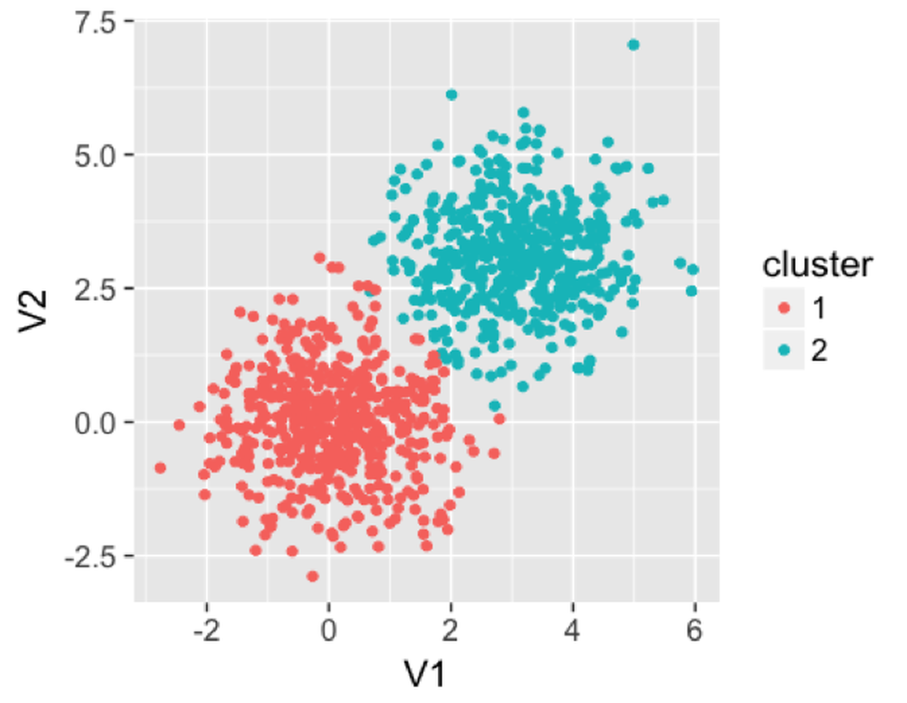 Figure 115: Clusters produced by the random forest model
We then use the following R code to apply a random forest model on this dataset to find the clusters. It can be seen that the clusters are reasonably recovered by the random forest model.
rm(list = ls(all = TRUE))
library(rpart)
library(dplyr)
library(ggplot2)
library(randomForest)
library(MASS)
library(cluster)
ndata <- 2000
sigma <- matrix(c(1, 0, 0, 1), 2, 2)
data1 <- mvrnorm(n = 500, rep(0, 2), sigma)
data2 <- mvrnorm(n = 500, rep(3, 2), sigma)
data <- rbind(data1, data2)
rf <- randomForest(data)
prox <- rf$proximity
clusters <- pam(prox, 2)
data <- as.data.frame(data)
data$cluster <- as.character(clusters$clustering)
ggplot(data, aes(x = V1, y = V2, color = cluster)) +
geom_point() + labs(title = 'Data points')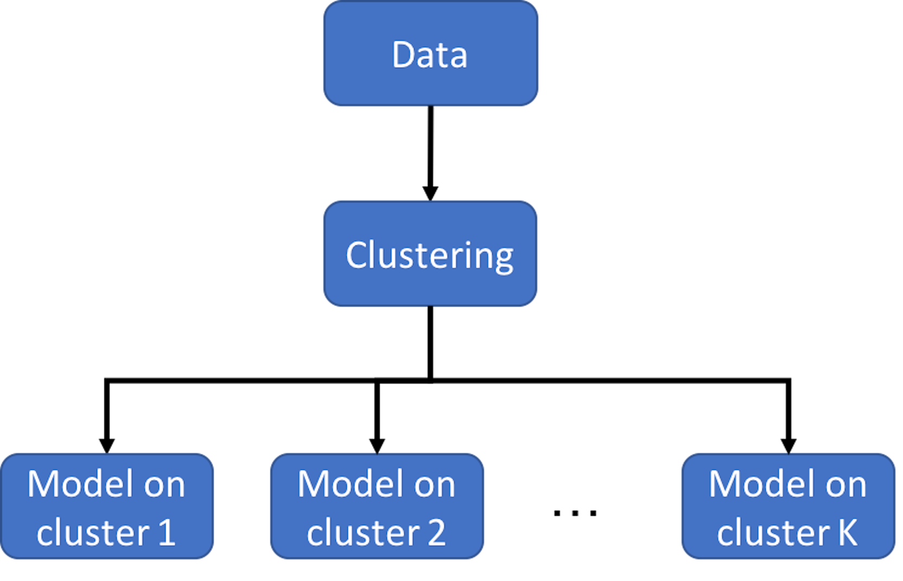 Figure 116: Clustering-based prediction models
As we have mentioned, clustering is a flexible concept. And it could be used in a combination of methods. Figure 116 illustrates the basic idea of clustering-based prediction models. It applies a clustering algorithm first on the data and then builds a model for each cluster. As a data analytics strategy, we could combine different clustering algorithms and prediction models that are appropriate for an application context. There are also integrated algorithms that have articulated this strategy on the formulation level. For example, the Treed Regression method163 Alexander, W. and Grimshaw, S., Treed regression. Journal of Computational and Graphical Statistics, Volume 5, Issue 2, Pages 156-175, 1996. is one example that proposed to build a tree to stratify the dataset first, and then, create regression models on the leaf nodes—here, each leaf node is a cluster. Similarly, the logistic model trees164 Landwehr, N., Hall, M. and Frank, E. Logistic model trees. Machine Learning, Volume 59, Issue 1, Pages 161–205, 2004. also use a tree model to cluster data points into different leaf nodes and build different logistic regression model for each leaf node. Motivated by this line of thought, more models have been developed with different combination of tree models and prediction models (or other types of statistical models) on the leaf nodes165 Gramacy, R. and Lee, H. Bayesian treed Gaussian process models with an application to computer modeling. Journal of American Statistical Association, Volume 103, Issue 483, Pages 1119-1130, 2008..166 Liu, H., Chen, X., Lafferty, J. and Wasserman, L. Graph-valued regression. In the Proceeding of Advances in Neural Information Processing Systems 23 (NIPS), 2010.
1. In what follows is a summary of the clustering result on a dataset by using the R package mclust.
## ----------------------------------------------------
## Gaussian finite mixture model fitted by EM algorithm
## ----------------------------------------------------
##
## Mclust VVV (ellipsoidal, varying volume, shape,
## and orientation) model with 3
## components:
##
## log-likelihood n df BIC ICL
## -2303.496 145 29 -4751.316 -4770.169
##
## Clustering table:
## 1 2 3
## 81 36 28
##
## Mixing probabilities:
## 1 2 3
## 0.5368974 0.2650129 0.1980897
##
## Means:
## [,1] [,2] [,3]
## glucose 90.96239 104.5335 229.42136
## insulin 357.79083 494.8259 1098.25990
## sspg 163.74858 309.5583 81.60001
##
## Variances:
## [,,1]
## glucose insulin sspg
## glucose 57.18044 75.83206 14.73199
## insulin 75.83206 2101.76553 322.82294
## sspg 14.73199 322.82294 2416.99074
## [,,2]
## glucose insulin sspg
## glucose 185.0290 1282.340 -509.7313
## insulin 1282.3398 14039.283 -2559.0251
## sspg -509.7313 -2559.025 23835.7278
## [,,3]
## glucose insulin sspg
## glucose 5529.250 20389.09 -2486.208
## insulin 20389.088 83132.48 -10393.004
## sspg -2486.208 -10393.00 2217.5332. (a) How many samples in total are in this dataset? How many variables? (b) How many clusters are found? What are the sizes of the clusters? (c) What is the fitted GMM model? Please write its mathematical form.
3. Consider the dataset in Table 29 that has \(9\) data points. Let’s use it to estimate a GMM model with \(3\) clusters. The initial values are shown in Table 29
Table 29: Initial values for a GMM model with \(3\) clusters
| ID | \(1.53\) | \(0.57\) | \(2.56\) | \(1.22\) | \(4.13\) | \(6.03\) | \(0.98\) | \(5.21\) | \(-0.37\) |
|---|---|---|---|---|---|---|---|---|---|
| Label | \(C1\) | \(C3\) | \(C1\) | \(C2\) | \(C2\) | \(C2\) | \(C1\) | \(C2\) | \(C3\) |
(a) Write the Gaussian mixture model (GMM) that you want to estimate. (b) Estimate the parameters of your GMM model. (c) Update the labels with your estimated parameters. (d) Estimate the parameters again.
4. Follow up on the dataset in Q3. Use the R pipeline for clustering on this data. Compare the result from R and the result from your manual calculation.
5. Consider the dataset in Table 30 that has \(10\) data points. Let’s use it to estimate a GMM model with \(3\) clusters. The initial values are shown in Table 30
Table 30: Initial values for a GMM model with \(3\) clusters
| ID | \(2.22\) | \(6.33\) | \(3.15\) | \(-0.89\) | \(3.21\) | \(1.10\) | \(1.58\) | \(0.03\) | \(8.05\) | \(0.26\) |
|---|---|---|---|---|---|---|---|---|---|---|
| Label | \(C1\) | \(C3\) | \(C1\) | \(C2\) | \(C2\) | \(C2\) | \(C1\) | \(C2\) | \(C3\) | \(C2\) |
(a) Write the Gaussian mixture model (GMM) that you want to estimate. (b) Estimate the parameters of your GMM model. (c) Update the labels with your estimated parameters. (d) Estimate the parameters again.
6. Design a simulation experiment to test the effectiveness of the R package mclust. For instance, simulate a three-cluster structure in your dataset by this GMM model
\[\begin{equation*}
\small
\boldsymbol{x} \sim \pi_{1} N\left(\boldsymbol{\mu}_{1}, \boldsymbol{\Sigma}_{1}\right) + \pi_{2} N\left(\boldsymbol{\mu}_{2}, \boldsymbol{\Sigma}_{2}\right) + \pi_{3} N\left(\boldsymbol{\mu}_{3}, \boldsymbol{\Sigma}_{3}\right),
\end{equation*}\]
where \(\pi_{1} = 0.5\), \(\pi_{2} = 0.25\), and \(\pi_{3} = 0.25\), and
\[\begin{equation*} \small \boldsymbol{\mu}_{1} = \left[ \begin{array}{c}{5} \\ {3} \\ {3}\end{array}\right], \text { } \boldsymbol{\mu}_{2} = \left[ \begin{array}{c}{10} \\ {5} \\ {1}\end{array}\right], \text { } \boldsymbol{\mu}_{3} = \left[ \begin{array}{c}{-5} \\ {10} \\ {-2}\end{array}\right]; \end{equation*}\]
\[\begin{equation*}
\small
\boldsymbol{\Sigma}_{1}=\left[\begin{array}{ccc}1 & 0 & 0 \\ 0 & 1 & 0 \\ 0 & 0 & 1 \end{array}\right], \text { } \boldsymbol{\Sigma}_{2}=\left[\begin{array}{ccc}1 & 0 & 0 \\ 0 & 1 & 0 \\ 0 & 0 & 1 \end{array}\right], \text { }
\boldsymbol{\Sigma}_{3}=\left[\begin{array}{ccc}1 & 0 & 0 \\ 0 & 1 & 0 \\ 0 & 0 & 1 \end{array}\right].
\end{equation*}\]
Then, use the mclust package on this dataset and see if the true clustering structure could be recovered.
7. Follow up on the simulation experiment in Q6. Let’s consider a GMM model with larger variance \[\begin{equation*} \small \boldsymbol{x} \sim \pi_{1} N\left(\boldsymbol{\mu}_{1}, \boldsymbol{\Sigma}_{1}\right) + \pi_{2} N\left(\boldsymbol{\mu}_{2}, \boldsymbol{\Sigma}_{2}\right) + \pi_{3} N\left(\boldsymbol{\mu}_{3}, \boldsymbol{\Sigma}_{3}\right), \end{equation*}\] where \(\pi_{1} = 0.5\), \(\pi_{2} = 0.25\), and \(\pi_{3} = 0.25\), and
\[\begin{equation*} \small \boldsymbol{\mu}_{1} = \left[ \begin{array}{c}{5} \\ {3} \\ {3}\end{array}\right], \text { } \boldsymbol{\mu}_{2} = \left[ \begin{array}{c}{10} \\ {5} \\ {1}\end{array}\right], \text { } \boldsymbol{\mu}_{3} = \left[ \begin{array}{c}{-5} \\ {10} \\ {-2}\end{array}\right]; \end{equation*}\]
\[\begin{equation*}
\small
\boldsymbol{\Sigma}_{1}=\left[\begin{array}{ccc}3 & 0 & 0 \\ 0 & 3 & 0 \\ 0 & 0 & 3 \end{array}\right], \text { } \boldsymbol{\Sigma}_{2}=\left[\begin{array}{ccc}3 & 0 & 0 \\ 0 & 3 & 0 \\ 0 & 0 & 3 \end{array}\right], \text { }
\boldsymbol{\Sigma}_{3}=\left[\begin{array}{ccc}3 & 0 & 0 \\ 0 & 3 & 0 \\ 0 & 0 & 3 \end{array}\right].
\end{equation*}\]
Then, use the R package mclust on this dataset and see if the true clustering structure could be recovered.
8. Design a simulation experiment to test the effectiveness of the diagnostic tools in the ggfortify R package. For instance, use the same simulation procedure that has been used in Q9 of Chapter 2 to design a linear regression model with two variables, simulate \(100\) samples from this model, fit the model, and draw the diagnostic figures.
9. Follow up on the simulation experiment in Q8. Add a few outliers into your dataset and see if the diagnostic tools in the ggfortify R package can detect them.